Riego
Regá temprano a la mañana
En verano el agua se aprovecha mejor a primera hora: se evapora menos y las hojas se secan durante el día, lo que reduce los hongos.
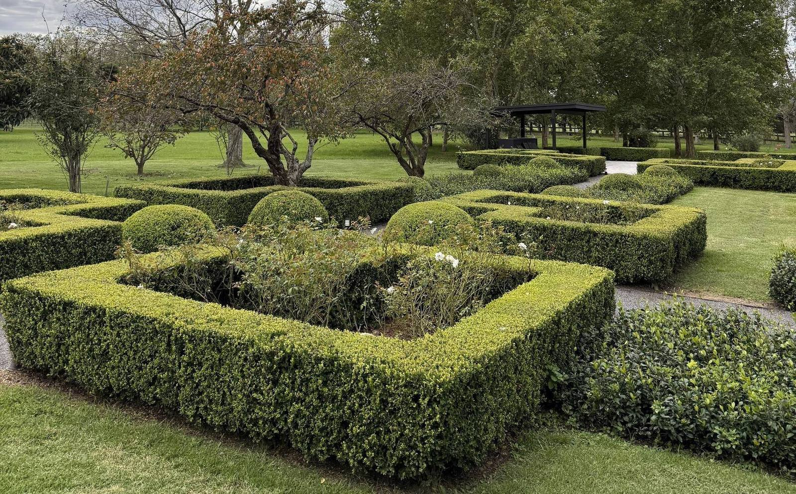
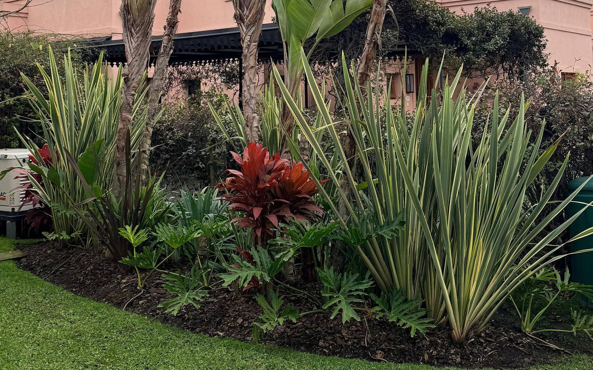
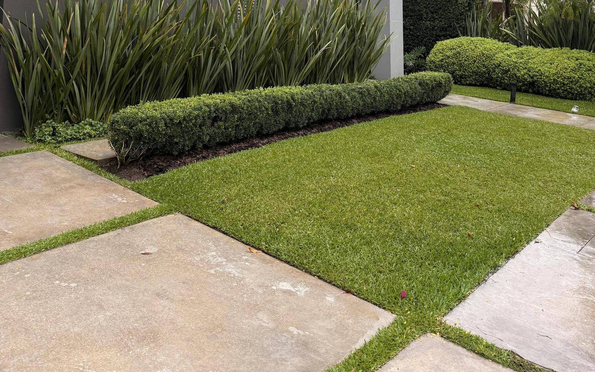
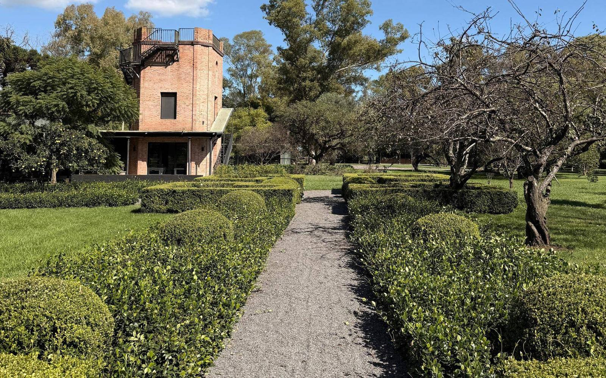
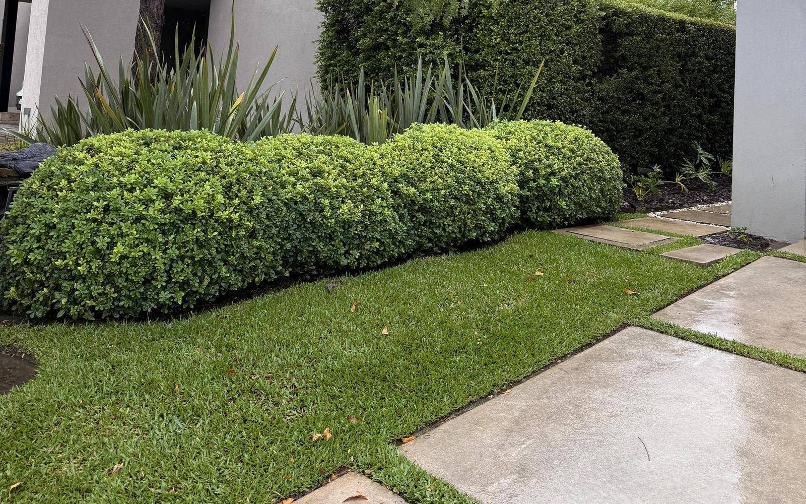
Paisajismo y mantenimiento · Nordelta
Especialistas en el cuidado de tus espacios verdes. Nos ocupamos de tu jardín todo el año para que vos solo lo disfrutes.
Servicios
Trabajamos con un abono mensual de mantenimiento y sumamos los trabajos extra que haga falta en cada temporada. Elegí un servicio para ver qué incluye.
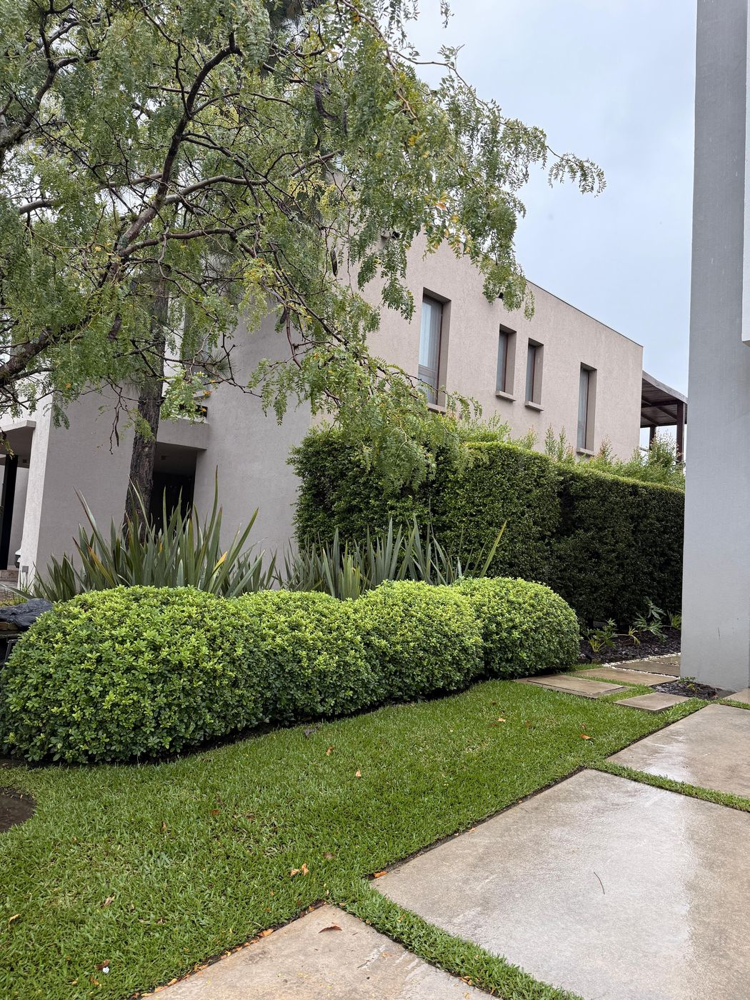
Abono mensual01
Nos ocupamos de tu jardín todo el año con visitas programadas. Vos lo disfrutás; nosotros lo mantenemos prolijo, sano y siempre listo.
Qué incluye
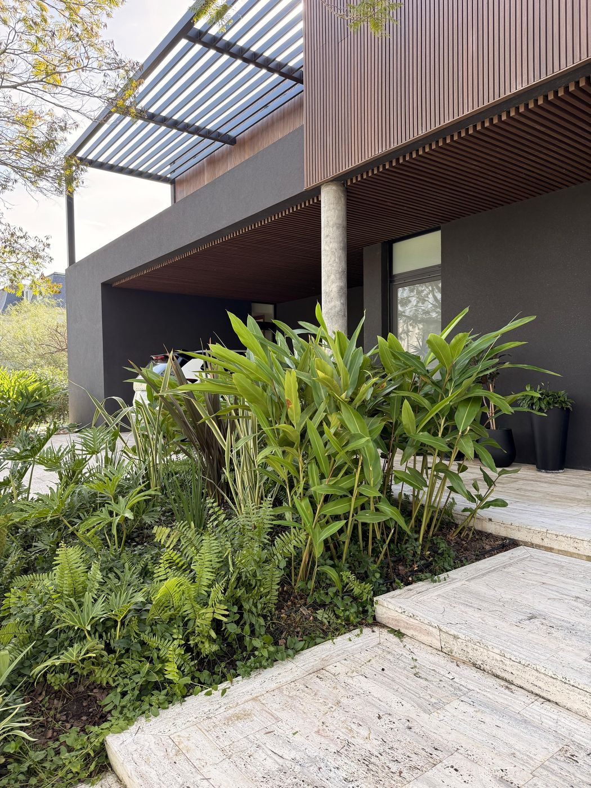
Proyectos02
Creamos jardines nuevos o renovamos los existentes, eligiendo cada especie según el sol, el suelo y el estilo de la casa.
Qué incluye
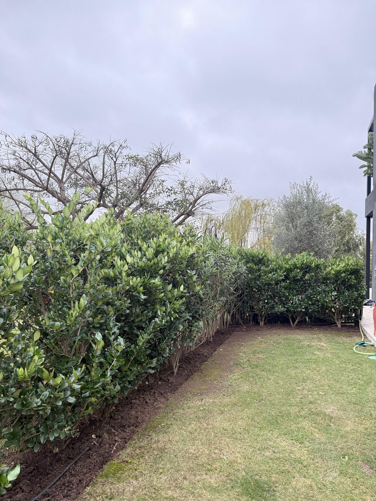
Trabajo puntual03
Recuperamos jardines descuidados o los dejamos impecables para un cambio de temporada, una mudanza o un evento especial.
Qué incluye
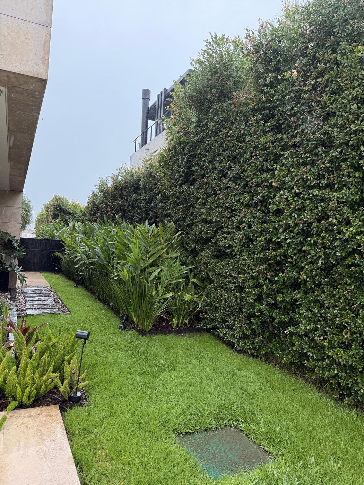
Instalación y service04
Instalamos y mantenemos sistemas de riego automático para que cada sector reciba justo el agua que necesita.
Qué incluye
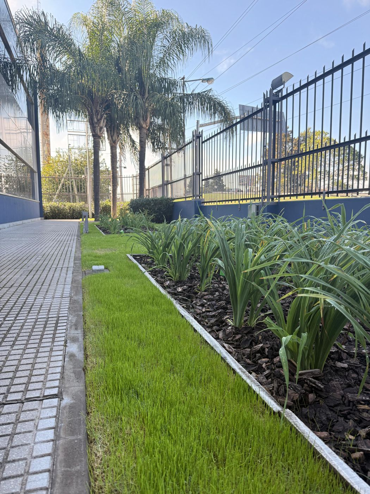
Materiales05
Conseguimos los materiales, los llevamos y los aplicamos. Vos no tenés que cargar bolsas ni salir a buscar nada.
Qué incluye
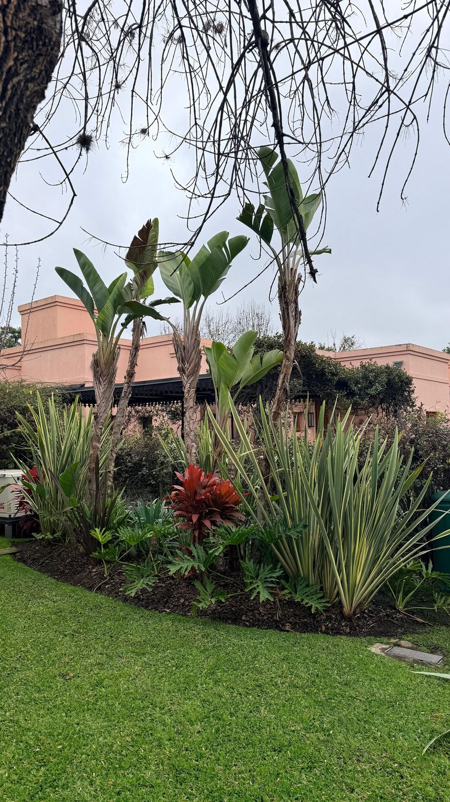
Sanidad06
Prevenimos y tratamos plagas y enfermedades a tiempo, con productos aplicados en la dosis justa.
Qué incluye
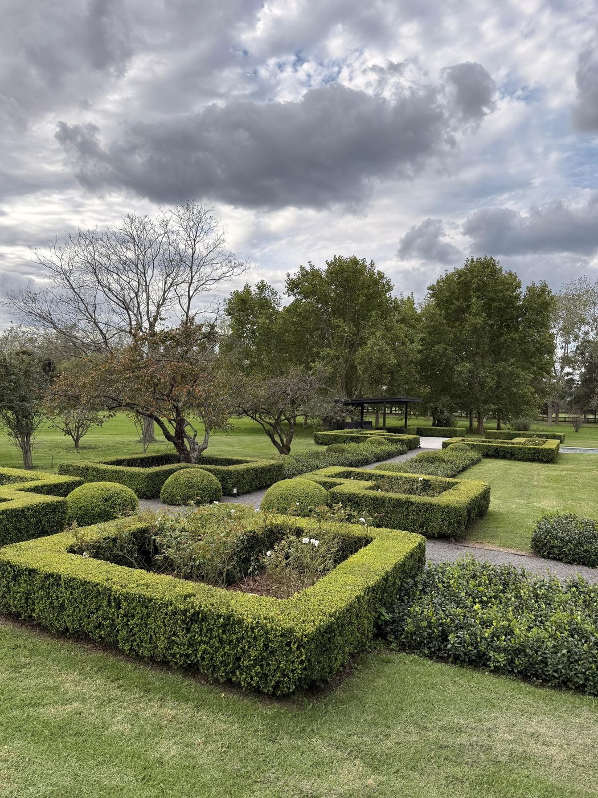
Formas y estructura07
Damos forma y estructura al jardín: cercos parejos, borduras definidas y plantas que crecen sanas.
Qué incluye
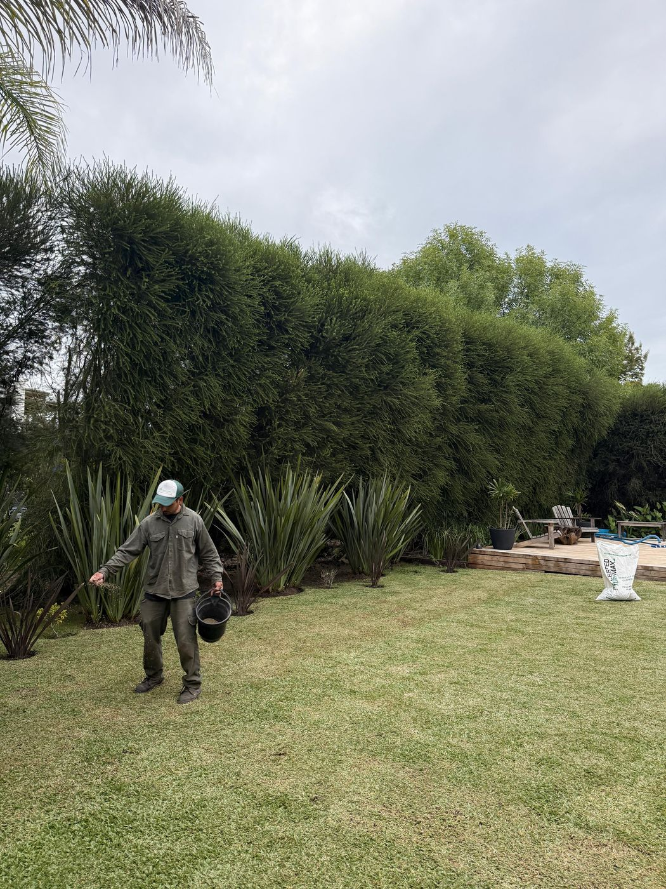
Siembra y cuidado08
Un césped denso, parejo y bien verde, con el cuidado que corresponde a cada estación del año.
Qué incluye
09
Elegimos cada ejemplar en el vivero, lo trasladamos y lo plantamos con todo lo necesario para que arraigue bien.
Qué incluye
Empresas que confían en nosotros el cuidado de sus espacios verdes.
Cómo trabajamos
Por WhatsApp o con el formulario. Contanos dónde está tu casa y qué necesita el jardín.
Recorremos el jardín con vos y te pasamos un presupuesto claro, con el detalle de cada trabajo.
Mantenimiento con visitas programadas y un comprobante a fin de mes con el detalle de todo lo que se hizo.
Proyectos
Algunos de los jardines en los que trabajamos. Tocá una foto para verla más grande.
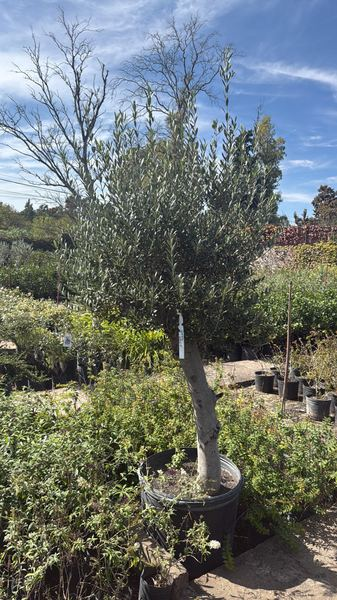
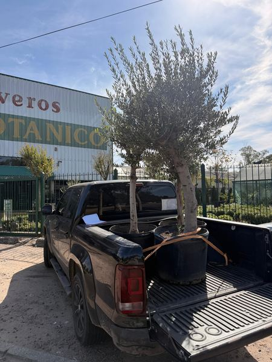
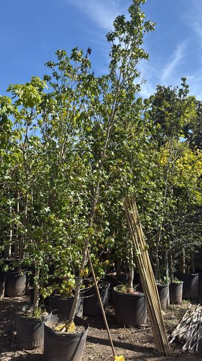
Selección Verde
Vamos al vivero, revisamos los ejemplares uno por uno y los llevamos nosotros mismos a tu casa. Así nos aseguramos de que cada árbol y cada planta llegue sano y con buena forma.
Estas son algunas especies que recomendamos para los jardines de la zona:
Tips
Riego
En verano el agua se aprovecha mejor a primera hora: se evapora menos y las hojas se secan durante el día, lo que reduce los hongos.
Césped
No cortes más de un tercio del largo de la hoja en cada pasada. Un césped un poco más alto resiste mejor el calor y las malezas.
Poda
Conviene recortarlo varias veces en la temporada de crecimiento, de forma suave. Las podas fuertes en pleno calor lo debilitan.
Plagas
El pulgón y la cochinilla se esconden en el envés. Detectarlos a tiempo permite tratarlos con menos producto y sin perder plantas.
Contacto
Completá el formulario y te respondemos a la brevedad. Si preferís, escribinos directo por WhatsApp.